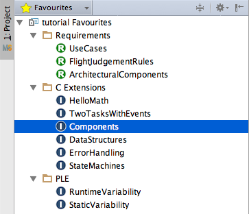

Project View
Language Namespace : com.mbeddr.mpsutil.projectview
For many applications (and their end users), the default MPS Project Explorer (aka Logical View) is too complicated. It shows too much "unnecessary" stuff. Also, depending on the use case and the stakeholder, the structure of the primary navigation device must be different, adapted for the use case or stakeholder.
The platform contains a DSL to describe the structure of arbitrary alternative tree views in the project explorer. MPS already provides a drop-down menu to select from various views, and the DSL can contribute additional ones.
The DSL supports the definition of arbitrary structures, labels, icons and actions and also lets you add additional nodes
that are useful for structuring the tree. To see how this DSL works, checkout the custom views defined in com.mbeddr.mpsutil.projectview.views solution as well as the mbeddr favourites view in the com.mbeddr.mpsutil.favourites.plugin plugin solution.
Below is a screenshot of that favourites view.

The language must be used in a plugin solution and supports the following properties:
- label: the name of the project view
- icon: the icon that's displayed to the left of the label
- priority: this value is used for sorting purposes of the project views. There are some predefined project views that have a priority (in IntelliJ terms: weight) that can't be used. The following IntelliJ/MPS project views exist: project view(prio: 0), scope view (prio: 4), file view (prio: 5) (TODO: priorities). The standard priority for new custom views is 10000. The language automatically increments the priority until it can find an unused priority.
- refresh on filesystem change: default: true
- refresh on make: default: true
- refresh on repository change: default: true
- refresh on class reload: default: true
- data provider: the keys of the data provider can be used as context parameters in actions.
- toolbar action group ID: the ID of an existing action group
The project view can also extend another view. The content of the preview has to implement the interface IViewElement.
The default implementation is the treeNode. It can extend other elements and accepts the following parameters:
- parent: the parent element in the project view
- type: a type for the query. The result can be accessed through the variable that has the same name as the tree nodes name.
- load children lazy: default:
true - load children async: default:
false - auto update children: automatically update the child tree node when the parent changes
- label: the text of the current node
- icon: the icon that is displaced to the left of the label
- text attributes: style attributes for the label such as bold, italic or a boder. The expression must return an instance of the class SimpleTextAttributes.
- action group ID: the ID of an existing action group that should be shown when right-clicking the node
- folder path: the virtual folder of the node
- folder action group ID: the ID of an existing action group that should be shown when right-click the virtual folder.
The current mps project can be accessed through the variable mpsProject. a project view can be reference by typing projectView
and the name of the project view.